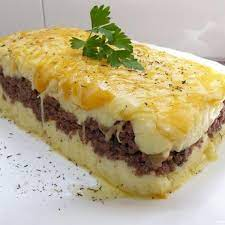

Potato cake
Home
Gnocchi
Milanesas

Take a look at this delicious looking potato cake!
This is a very easy and delicious dish that will take only a few ingredients to make. It's a dish that will allow you to
add your personal signature! make it your own!
Ingredients:
- 1kg potatoes
- 100gr of butter
- 200gr of cheese
- 1kg of groung meat
- 2 egg
- Salt
- Black pepper
Steps:
- Pre-heat the oven at 150 degrees celcius for about and hour
- Wash and peel the potatos
- Place them in a pot with water and sal and boil
- Once the potatoes are cooked, mash them trying to avoid lumps
- Add the butter and mash a bit more
- Put the ground meat in an oven friendly pot and add the egg and condimens
- Put the pot in the oven for about 30 mins
- Take the meatlof out and cover it with a lyer of mashed potatoes
- Put slices of chees on top of the potatoes and take to the oven until the cheese has gratinated
- Take out and ready to serve!